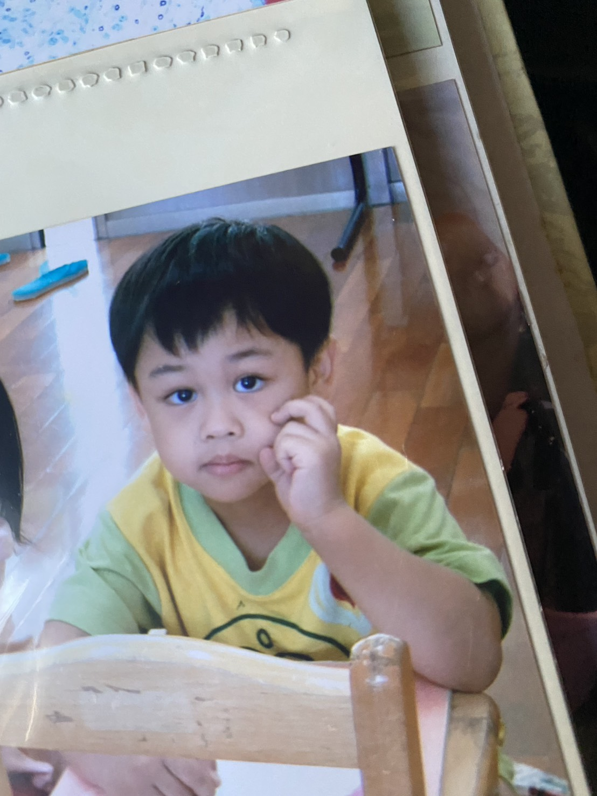

Jie-Long Chen (陳杰龍)
You are capable of amazing things.
📧 jielong.chen.work@gmail.com |
📍 Taiwan
Education
- 國立陽明交通大學, 資訊管理研究所, 博士, 2026/09入學
- 國立雲林科技大學, 資訊管理系所, 碩士, 2024/09 - 2026/06
- 國立屏東大學, 資訊管理學系, 學士, 2020/09 - 2024/01
- 國立斗六高級家事商業職業學校, 資料處理科, 高中, 2017/09 - 2020/06
Experiences
- 資訊科技家教與顧問, CodeCrafters交流站, 2023/07 - 迄今
- 助教, 基礎程式設計(C++), TAICA, 2025/09 - 2025/12
- 助教, 物件導向程式語言(Java), 雲科大, 2025/02 – 2025/06
- 助教, 程式設計概念與方法(Python), 雲科大, 2024/09 – 2025/01
- 軟體開發工程師(實習), 中國信託商業銀行(台中開發中心科), 2024/02 – 2024/06
Publications
Journal (3)
- Jie-Long Chen , Tung-Chieh Kuo* , Yen-Yun Liu. "Optimizing Storage and Computation Costs in Backup Systems: A Dynamic Decision Model Based on Information Entropy", SAR Journal - Science and Research, 2026. (submitted)
- Wen-Feng Hsiao, Min-Chun Tsai, Jie-Long Chen*. "Real-Time Facial Expression Detection for Gamified Application", Journal of Information Management, 2026. (TSSCI, ACI) (submitted)
- 陳杰龍, 鄭琬瑩, 蕭文峰*, 郭東婕. "應用於特殊教育國語學習之遊戲化學習平台的先導與可行性研究", 特殊教育學報, 2026. (TSSCI, ACI) (submitted)
Conference (6)
- Jie-Long Chen, Tung-Chieh Kuo, Arthur Chang*. "Effects of Client Number and Non-IID Data Distributions on Federated Learning for Cervical Cancer Binary Classification." International Forum on Medical Imaging in Asia, Kaohsiung, Jan 2026.
- 郭東婕, 蕭鉢, 陳杰龍. "應用 DEMATEL 辨識學生選擇 EMI 課程的關鍵影響因素." 第30屆資訊管理暨實務研討會, 桃園市, Dec 2025.
- 陳杰龍, 張榮昇. "跨資料集聯邦學習於子宮頸癌抹片影像分類之研究." 台灣網際網路研討會暨全國計算機會議, 宜蘭縣, Oct 2025.
- Jie-Long Chen, Ching-Chung Chen, Arthur Chang. "A Comparative Analysis of Machine Learning Algorithms for Wheat Disease Classification in Taiwan Using the Orange Data Mining Tool." IEEE Conference on Computational Intelligence in Bioinformatics and Computational Biology , Tainan, Aug 2025.
- 陳杰龍, 郭東婕, 張榮昇. "少樣本學習下資料擴增與遷移學習對蕈類影像分類." 第15屆網路智能與應用研討會, 雲林縣, July 2025.
- 陳杰龍, 鄭琬瑩, 蕭文峰. "資訊科技輔助教學對特教生國語學習成效之研究." 第36屆國際資訊管理學術研討會, 台北市, May 2025. Best Paper Presentation
Projects
- 國科會, 相輔相程─特教生國文與對話能力之資訊輔導, 2023/07 - 2024/02
Honors
- 錄取國立陽明交通大學、國立成功大學資訊管理博士班, 2025
- Reviewer, IEEE Conference on Computational Intelligence in Bioinformatics and Computational Biology, 2025.
- 國立雲林科技大學王秋雄榮譽博士研究所優秀入學 $600,000 NTD 獎學金, 2024
- 國立雲林科技大學資管系甄試錄取研究生獎學金 $30,000 NTD, 2024
- 臺灣銀行113 年新進人員甄試-程式設計人員(二)錄取, 2024
- 國家科學及技術委員會-大專學生研究創作獎, 2024
- 國立屏東大學-第二名畢業, 2024
- 國立屏東大學資管系5次書卷獎, 2024
- 國立屏東大學資訊管理學系修業三年半提早畢業, 2024
- 超過二十位程式設計授課經驗, 2024
- 國立屏東大學112年資訊學院實務專題成果競賽-C組第三名, 2023
- 錄取國立中央大學、國立中山大學、國立中興大學、國立彰化師範大學、國立雲林科技大學、國立屏東大學等資訊管理研究所碩士班, 2023
- 第28屆大專院校資訊應用服務創新競賽-教育開放組第一名, 2023
- 創辦CodeCrafters交流站, 2023
- 國家科學及技術委員會-大專學生研究計畫通過, 2023
- 新光人壽獎助學金, 2023
- 擔任大學專題組長並與國立成功大學資工系教授蘇文鈺、愛自造者學習協會(PTWA)合作, 2022
- 巨匠電腦金匠獎-程式設計競賽Python組決賽, 2022
- 四技二專統一入學測驗-計算機概論與商業概論滿級分, 2020
Certificates
- iPAS AI應用規劃師-初級 (全國首批), 2025
- TOEIC Listening and Reading Test 550, 2024
- 電腦硬體裝修技術士丙級, 2023
- TQC+ 軟體設計領域物件導向程式語言 Java, 2021
- TQC+ 程式語言 Python 3, 2020
- 電腦軟體應用技術士乙級, 2020
- BAP商務專業應用能力國際認證 Excel, 2019
- TQC+ App Inventor程式設計, 2019
- TQC 英文輸入, 2018
- TQC 中文輸入, 2018
- 電腦軟體應用技術士丙級, 2018
System Developments
-
房屋租賃平台, 中國信託商業銀行, 2024
Java, Spring Boot, Angular, TypeScript, H2 DB. -
特教生國語與對話能力之資訊輔導, 國立屏東大學, 2023
Python, Django, MySQL, Face Expression Recognition. -
LINE 聊天機器人, 個人, 2023
OpenAI GPT-3 API, Flask, ngrok. -
陳杰龍的筆記網站, 個人, 2022
Html、Css、JavaScript. -
圖書館借還書系統, 國立屏東大學, 2022
C#, Windows Forms, MS SQL Server. -
計程車費用共享 APP, 國立屏東大學, 2021
Java、Android、Firebase. -
乳癌預測, 個人, 2021
Python, TensorFlow, Keras. -
COVID-19 快篩試劑診所配發查詢, 個人, 2021
Python. -
英文單字練習, 個人, 2020
Python. -
Travel Cat 旅行 APP, 國立斗六家事商業職業學校, 2019, 個人, 2020
MIT App Inventor、Firebase.